Family Recipes Zine: Where Storytelling Meets Editorial Design
A handcrafted zine preserving three generations of Filipino recipes through illustration, typography, and editorial design.
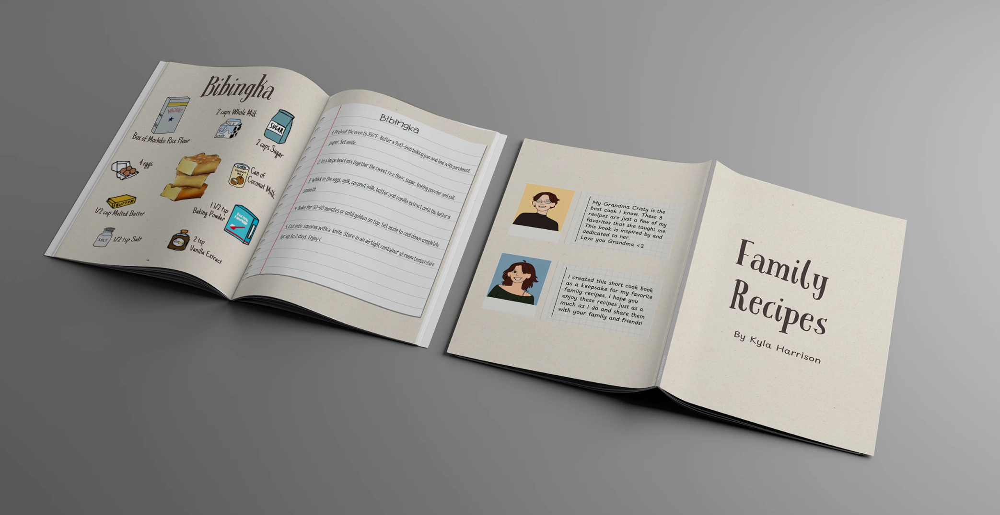
The project
Some recipes are too important to forget.
This zine was created as a heartfelt tribute to my grandma Cristy, who passes down generations of Filipino recipes. The goal was to preserve these cherished dishes — Bibingka, Sinigang, and Afritada — and share them in a personal, engaging, and visually compelling format.
"My Grandma Cristy is the best cook I know. These 3 recipes are just a few of my favorites that she taught me. This book is inspired by and dedicated to her."
— Kyla Harrison
Research and content
Starting with the source — family.
I began by interviewing family members and collecting handwritten recipes. Each recipe was broken down into ingredients and clear step-by-step instructions, making it beginner-friendly and true to the home-cooked experience.
Bibingka
A soft rice cake baked with coconut milk and butter. A beloved Filipino dessert often enjoyed during the Christmas season.
Sinigang
A sour tamarind-based soup with pork and vegetables. A comforting Filipino staple that is both hearty and deeply flavorful.
Afritada
A tomato-based chicken stew with bell peppers, carrots, and potatoes. A rich, satisfying dish that feels like home.
Mood board and visual style
Warm, vintage, and rooted in nostalgia.
I curated a warm, vintage-inspired mood board with textured paper backgrounds, handwritten typography, and soft, earth-toned illustrations. The goal was to evoke a sense of nostalgia and home — something that felt like pulling a recipe card out of a grandmother's kitchen drawer.
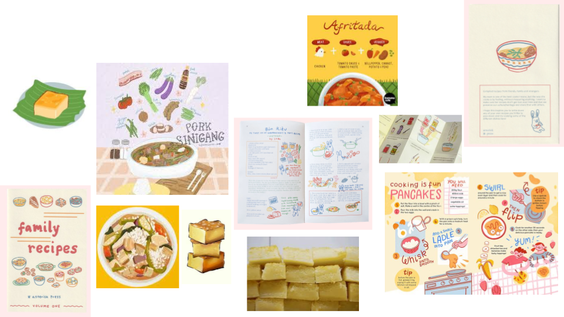
Illustrations
Every ingredient, drawn by hand.
I created hand-drawn custom vector illustrations of each ingredient in Procreate to add personality and visual clarity. This playful approach helps make the zine appealing to all ages — and keeps the warmth of a handmade recipe book alive in a digital age.
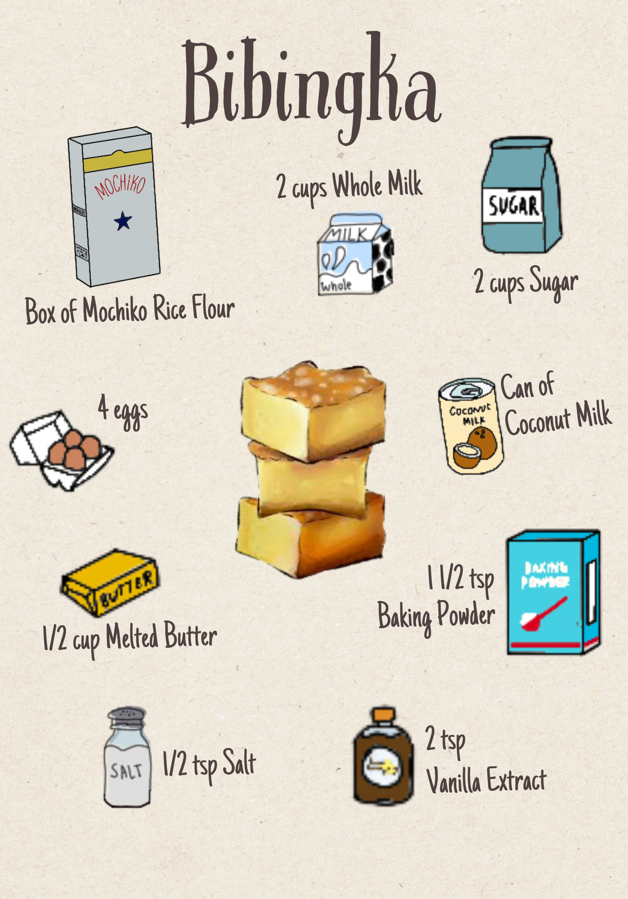
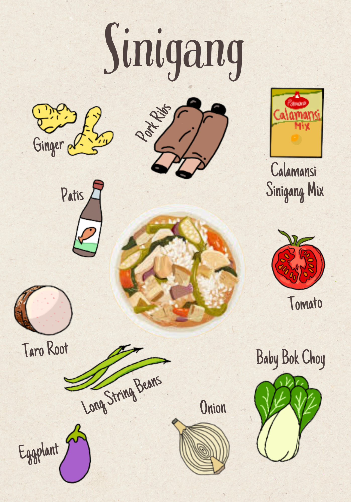
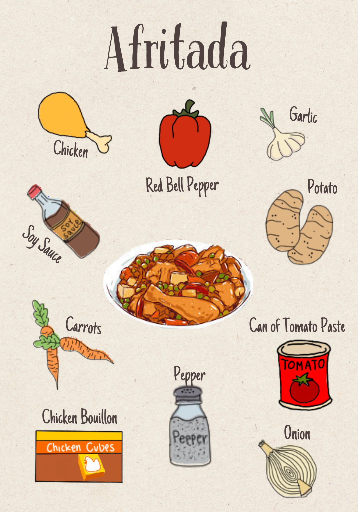
Sketching the layout
Planning the story before designing it.
Before opening InDesign I sketched out every page layout on paper. Planning the structure first helped me figure out how to balance illustrations with recipe text, and how to create a consistent visual rhythm across all three recipes.
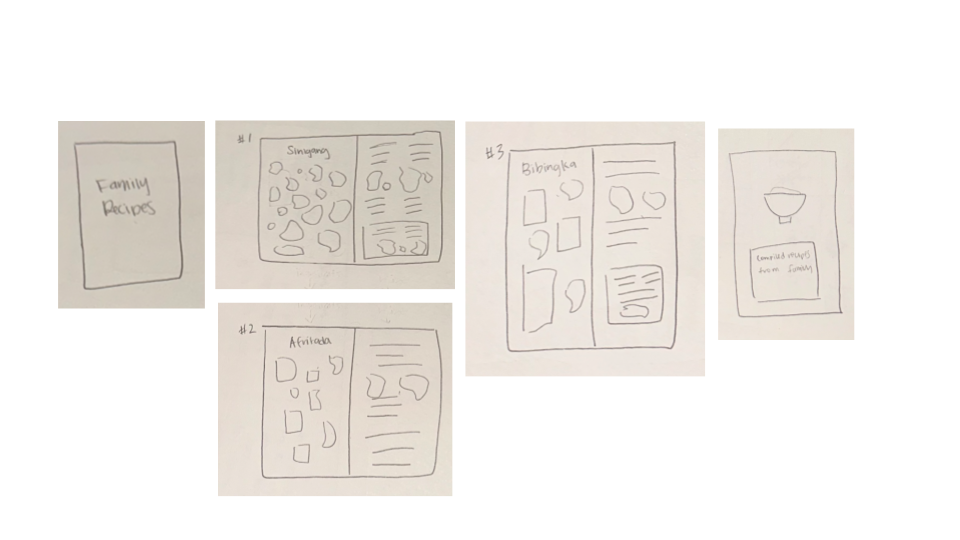
The zine
Six spreads. Three recipes. One family.
Each recipe gets two spreads — one for the illustrated ingredients and one for the full recipe with step-by-step instructions. The editorial layout balances warmth and readability, making each page feel like a memory as much as a recipe.
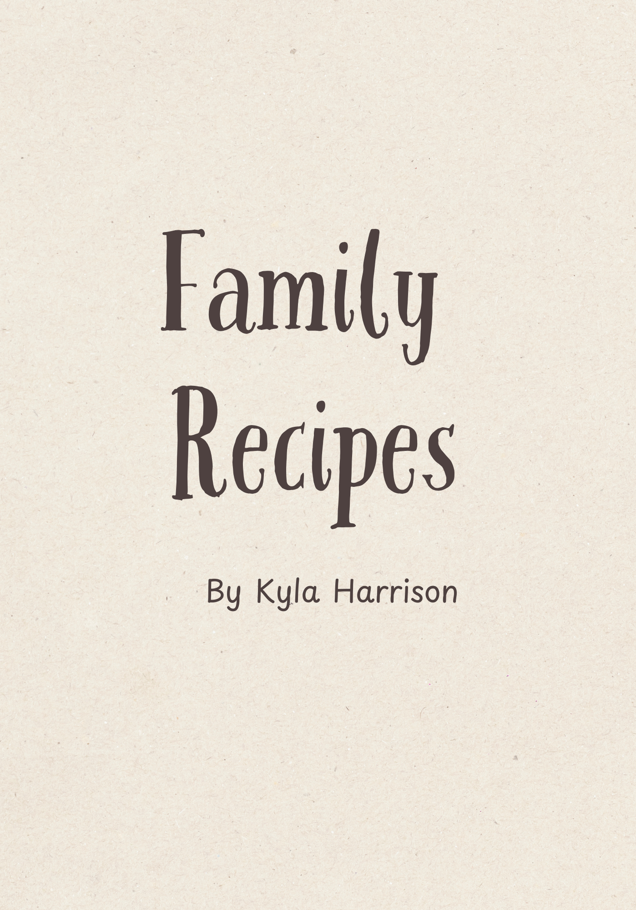
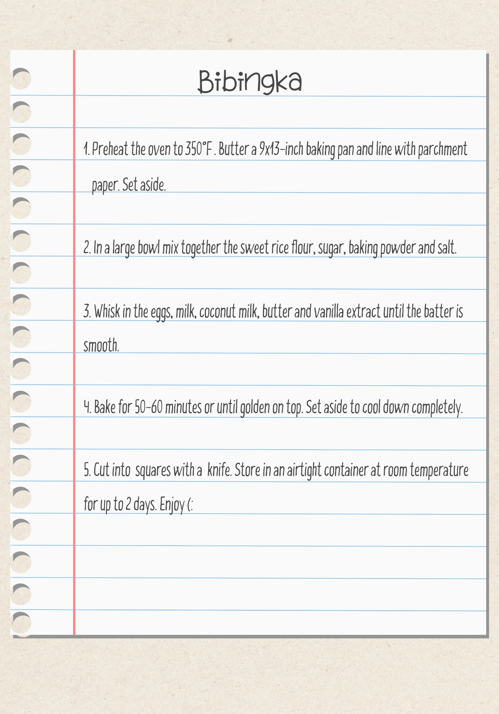
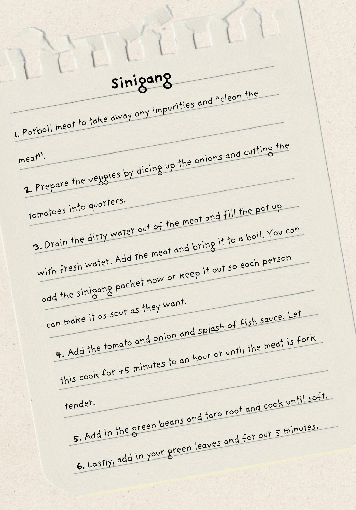
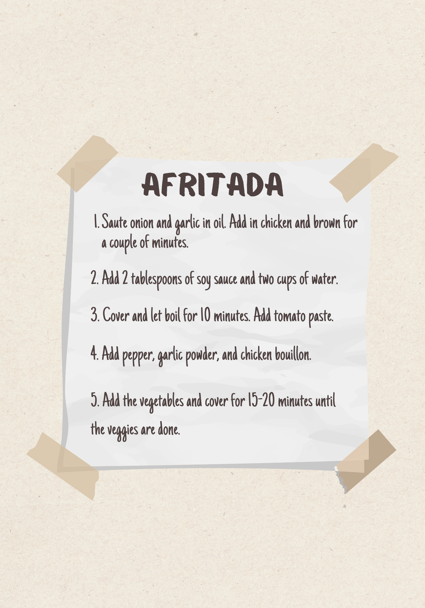
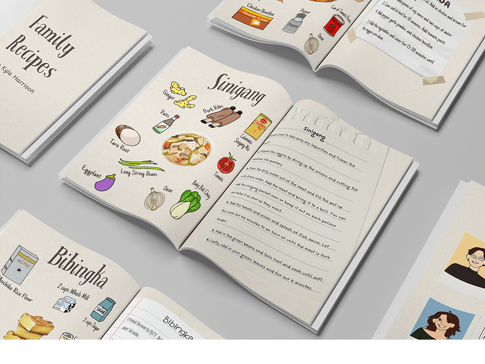
Reflection
What I learned.
This project taught me that the most powerful design work often comes from the most personal place. Designing something for my grandma — someone whose cooking has shaped so many of my memories — gave every decision weight and intention.
Working across Procreate, Canva, and Adobe InDesign pushed me to think about how tools work together in a print workflow. Illustration, layout, and typography all had to speak the same visual language, and getting that consistency right was one of the most satisfying challenges of the project.
What worked
Starting with hand-drawn sketches gave me a clear structure before opening any software. The planning phase made the InDesign build significantly smoother and more intentional.
What I would do differently
I would spend more time on typographic hierarchy — finding the right balance between the handwritten feel and clean readability took longer than expected.
What is next
I would love to print physical copies and share them with family. The zine was always meant to be held, not just viewed on a screen.